Yapay zekâyı laboratuvardan çıkarıp sahada çalıştırıyorum.
I take AI out of the lab and make it work in the field.
Bilgisayarlı görü, makine öğrenmesi, LLM tabanlı ajanlar, IoT ve uç cihazlar, masaüstü ve web uygulamaları. Fabrikalarda kalite kontrol, tankerlerde sensör ve kamera takibi, atölyelerde alet takibi kurdum. Elanus Robotics kurucu ortağıyım; danışmanlık ve proje bazlı çalışıyorum.
Computer vision, machine learning, LLM-based agents, IoT and edge devices, desktop and web applications. I've built quality inspection in factories, sensor-and-camera tracking on tankers and tool tracking in workshops. Co-founder of Elanus Robotics; available for consulting and project work.
Neler yapıyorum
What I do
Fikirden, sahada çalışan sisteme.
From the idea to a system that runs in the field.
Yazılım, donanım ve süreç aynı masada tasarlanınca sistem çalışır. Üçünü birlikte düşünürüm; gerekirse üçünü de yaparım.
A system works when software, hardware and process are designed at the same table. I think about all three together, and build all three when needed.
-
Bilgisayarlı görü ve kalite kontrol
Computer vision and quality inspection
Yüzey kusuru, baskı hatası, eksik veya yanlış komponent, ölçü ve renk kontrolü; nesne tespiti, takip ve poz analizi. Kamera-ışık seçiminden model eğitimine ve hat entegrasyonuna kadar.
Surface defects, print errors, missing or wrong components, dimension and colour checks; object detection, tracking and pose analysis. From camera and lighting selection to model training and line integration.
üretim · elektronik · seramik · güvenlik kameralarımanufacturing · electronics · ceramics · cctv analytics -
Yapay zekâ ve ajan sistemleri
AI and agent systems
Makine öğrenmesi modelleri, LLM tabanlı ajanlar ve otomasyonlar, veri analizi ve karar destek. Model seçiminden üretime alma, izleme ve yeniden eğitime kadar.
Machine-learning models, LLM-based agents and automations, data analysis and decision support. From model selection to deployment, monitoring and retraining.
süreç otomasyonu · doküman ve veri işleme · tahminlemeprocess automation · document and data pipelines · forecasting -
IoT, uç cihaz ve saha sistemleri
IoT, edge and field systems
Sensör, PLC ve Modbus entegrasyonu, 4–20 mA ölçüm, GSM ile veri aktarımı, Nvidia Jetson ve Coral üzerinde model çalıştırma, web tabanlı izleme panelleri.
Sensor, PLC and Modbus integration, 4–20 mA measurement, GSM data links, models running on Nvidia Jetson and Coral, web-based monitoring dashboards.
filo ve tanker · tesis izleme · enerjifleet and tankers · plant monitoring · energy -
Yazılım geliştirme
Software development
Masaüstü uygulamalar (Qt, C#), web paneller ve API'ler, kamera ve cihaz entegrasyonları, veri tabanı tasarımı. Python ve C++ ağırlıklı; işin gerektirdiği dilde.
Desktop applications (Qt, C#), web dashboards and APIs, camera and device integrations, database design. Mostly Python and C++, in whatever language the job needs.
operatör arayüzleri · dashboard · entegrasyonoperator interfaces · dashboards · integrations -
Danışmanlık ve eğitim
Consulting and training
Fizibilite ve teknik değerlendirme, mevcut sistemin denetimi, yapay zekâ yol haritası; ekipler için görüntü işleme ve makine öğrenmesi eğitimi; konferans konuşmaları.
Feasibility and technical assessment, audits of existing systems, AI roadmaps; computer vision and machine-learning training for teams; conference talks.
yarım günlük değerlendirme · ekip eğitimi · konuşmahalf-day assessment · team training · talks
Çalışma şekli
Ways of working
- Proje bazlı
- Saatlik danışmanlık
- Sözleşmeli uzaktan, yarı veya tam zamanlı
- Şirket içi eğitim
- Yerinde devreye alma
- Project-based
- Hourly consulting
- Remote contract, part- or full-time
- In-house training
- On-site commissioning
Seçilmiş işler
Selected work
Sahada çalışan sistemler.
Systems that run in the field.
Elanus Robotics'te tasarladığım ve yazılımını geliştirdiğim ürünler ile Alpplas Endüstriyel Yatırımlar'da gerçek üretim hatlarına kurduğum sistemler. Alpplas işleri gizlilik gereği fotoğrafsız; şemalar sistemin mantığını gösterir.
Products I designed and wrote the software for at Elanus Robotics, and systems I commissioned on real production lines at Alpplas Endüstriyel Yatırımlar. Alpplas work is shown as schematics for confidentiality.
-
2026 –Elanus · Ar-Ge
Yapay zekâ tabanlı seramik kalite kontrolü
AI-based ceramic quality inspection
Seramik ve porselende deseni üretim hatasından ayırt eden derin öğrenme sistemi. Ürünün dört yüzeyi kontrollü aydınlatma altında line-scan ve area-scan kameralarla taranıyor; uç cihazda analiz, reject mekanizması ve hata istatistikleri. Aktif Ar-Ge ve pilot uygulama.
A deep-learning system that tells decorative pattern from production defects on ceramics and porcelain. All four faces are scanned with line-scan and area-scan cameras under controlled lighting; edge analysis, a reject mechanism and defect statistics. Active R&D and pilot.
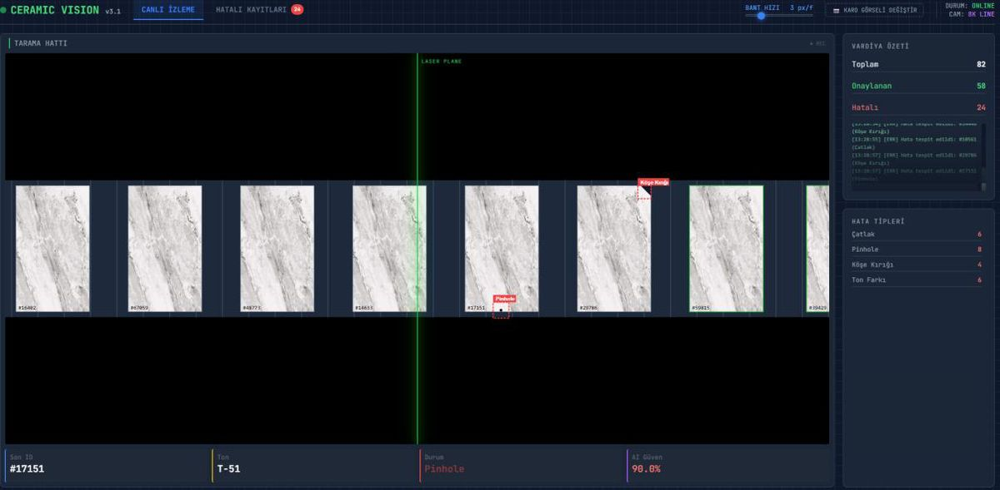
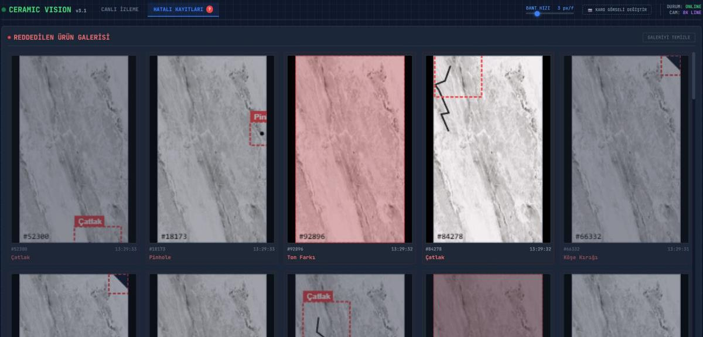
Hat görüntüsü ve hata paneli · Elanus pilot Line view and defect panel · Elanus pilot 4 yüzey4 facesdesen ve hata ayrımıpattern vs defect -
2025Elanus
İSG takibi: görü ajanı tabanlı güvenlik sistemi
Workplace safety with vision agents
Mevcut CCTV altyapısını yapay zekâ analizine dönüştüren sistem. Düşmeyi saniyesinde algılıyor, iskelet takibiyle vücut açılarını ve ergonomik riski analiz ediyor, sanal güvenlik alanlarına yetkisiz girişte anlık alarm üretiyor. AgentCon İstanbul 2026'da anlattığım sistem.
Turns an existing CCTV setup into AI analysis. Detects a fall within a second, analyses body angles and ergonomic risk through skeleton tracking, and raises instant alarms on unauthorised entry into virtual safety zones. The system I presented at AgentCon Istanbul 2026.

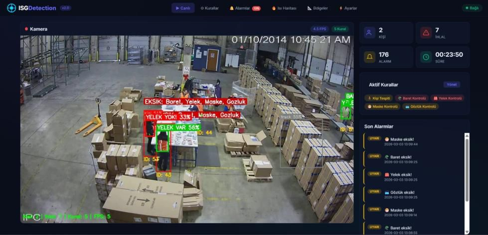
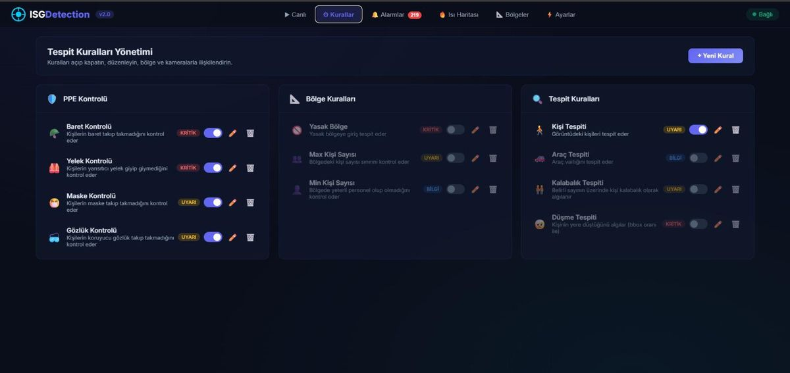
Kamera analizi ve yönetim paneli · canlı demoyu dene Camera analytics and dashboard · try the live demo CCTV → YZCCTV → AImevcut kameralarlawith existing cameras -
2025Elanus
ToolGuard: NFC tabanlı endüstriyel alet takibi
ToolGuard: NFC-based industrial tool tracking
Havacılık bakımı ve ağır sanayi için alet takip sistemi. Her alet NFC kimliğiyle tanımlı; kiosk okutmadan çıkış tamamlanmıyor, alet iş emriyle otomatik eşleşiyor, kullanıcı doğrulanıyor ve zaman damgalı kayıt oluşuyor. FOD riskine karşı dijital ispat.
Tool tracking for aviation maintenance and heavy industry. Every tool carries an NFC identity; checkout can't complete without a scan at the kiosk, tools are matched to work orders automatically, users are verified and every event is time-stamped. Digital proof against FOD risk.
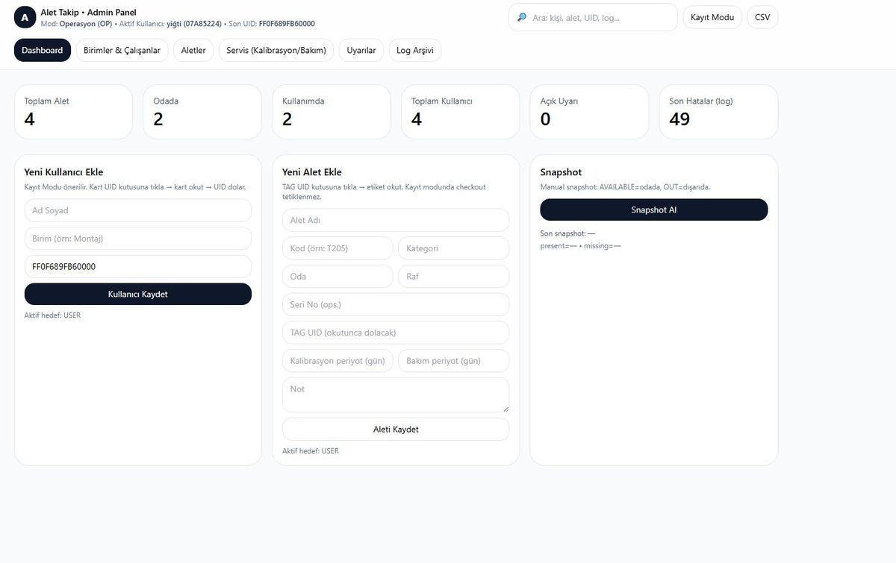
Yönetim paneli: kullanıcılar, aletler, iş emirleri Admin panel: users, tools, work orders NFCiş emri doğrulamawork-order verification -
2025Elanus
Akıllı bakım istasyonu yönetimi
Smart service-bay management
Araç servislerinde mevcut kameraları operasyon analizine çeviren sistem. Her iş istasyonu ayrı izleniyor, iş emirleri hedef süreyle eşleşiyor, gecikmeler otomatik işaretleniyor; yöneticiye anlık performans paneli ve günlük rapor.
Turns the cameras already in a vehicle service centre into an operations analysis tool. Each bay is monitored separately, work orders are matched with target times, delays are flagged automatically; managers get a live dashboard and a daily report.
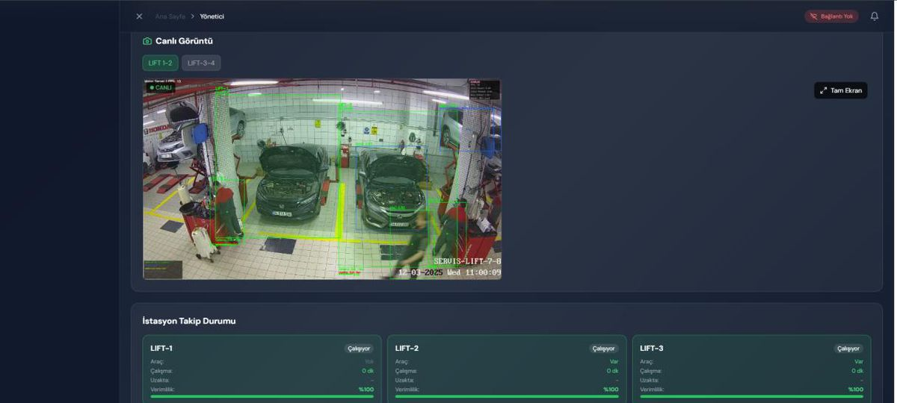
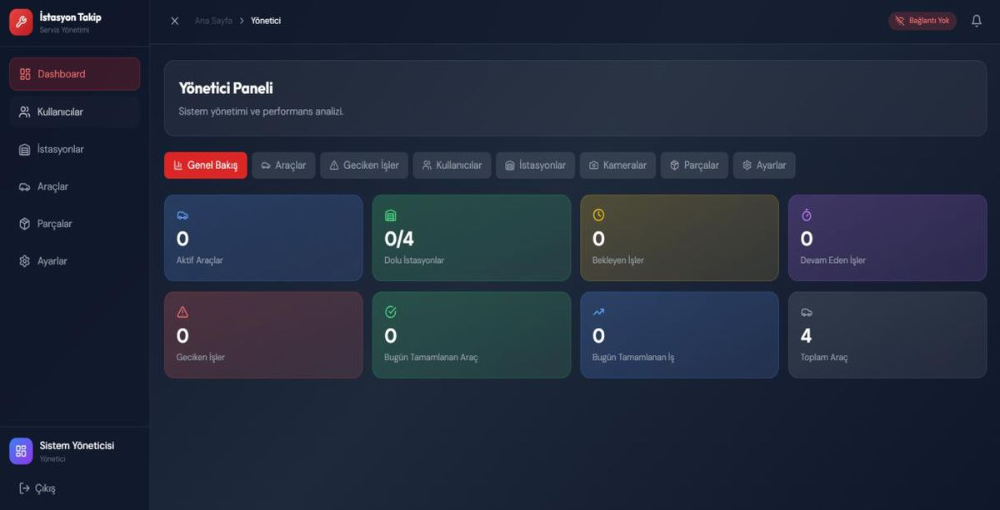
İstasyon kamerası ve yönetici paneli Bay camera and manager dashboard +1 araç/gün+1 car/daykapasite potansiyelicapacity potential -
2024 – 2025Alpplas
Gerçek zamanlı personel ve aktivite takibi
Real-time personnel and activity tracking
Üretim alanında çok kameralı, derin öğrenme tabanlı takip. Image alignment ile geniş alan; pose estimation ile düşme, tehlikeli bölge ihlali ve kötü duruş tespiti; LSTM ile hareket akışı ve cycle time hesabı.
Multi-camera, deep-learning tracking across the production floor. Wide-area coverage through image alignment; pose estimation for falls, danger-zone violations and bad posture; LSTM analysis for motion flow and cycle time.
Şema: iki kameranın görüş alanı, takip edilen çalışanlar, tehlikeli bölge ve düşme alarmı Schematic: two camera fields of view, tracked workers, a danger zone and a fall alarm Çok kameraMulti-cameraanlık anomalilive anomaly alerts -
2024Elanus
ADR uyumlu akıllı tanker takip sistemi
ADR-compliant smart tanker tracking
Akaryakıt ve tehlikeli madde tankerlerinde kapak ve vana hareketlerini manyetik sensörlerle izleyen, olay anında otomatik kamera kaydı başlatan, konum ve zaman damgasıyla merkezi bulut paneline aktaran güvenlik sistemi. Ex-proof muhafaza, GSM router, web panel.
Monitors hatch and valve movements on fuel and hazardous-goods tankers with magnetic sensors, starts camera recording automatically on an event, and reports it with location and timestamp to a central cloud panel. Ex-proof housing, GSM router, web dashboard.
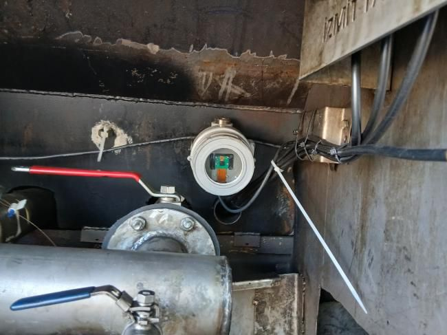
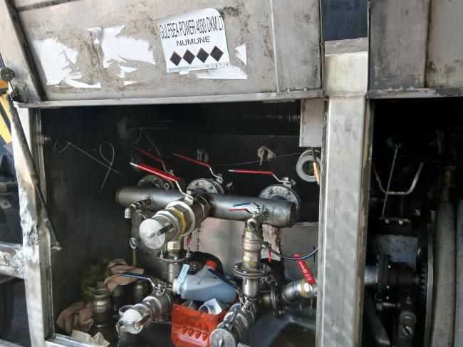
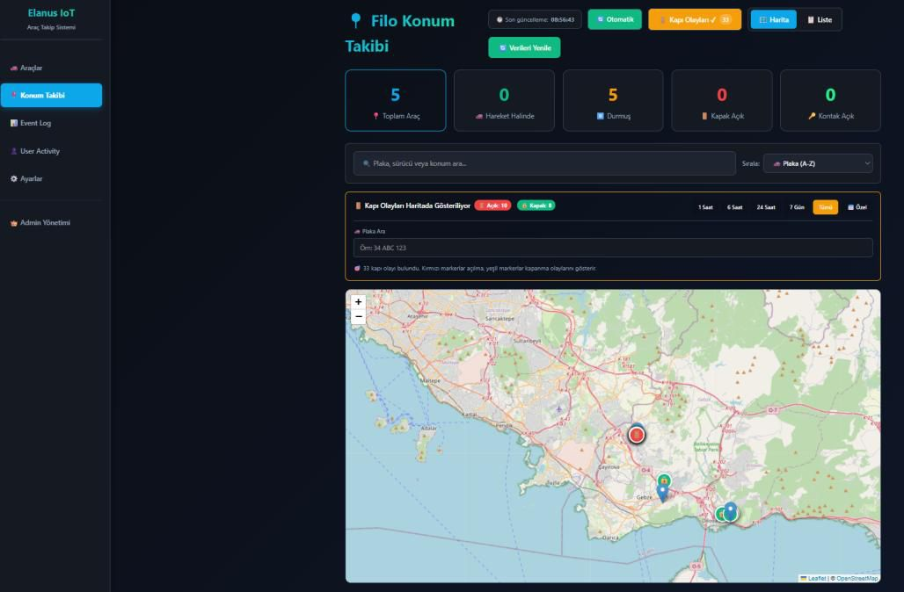
Saha montajı ve filo paneli Field installation and fleet dashboard Olay anındaOn eventotomatik video kaydıautomatic video record -
2024Elanus
Basınç sensörü tabanlı yakıt ölçümü
Pressure-based fuel measurement
Filo araçlarında şamandıralı sensörlerin kör noktalarını ortadan kaldıran hidrostatik ölçüm. Depo altına monte basınç sensörü, 4–20 mA sinyal işleme, her depo için litre-basınç kalibrasyonu, GSM IO ile web panele anlık tüketim eğrisi.
Hydrostatic measurement that removes the blind spots of float sensors in fleet vehicles. A pressure sensor under the tank, 4–20 mA signal processing, a litre-to-pressure calibration per tank, and a live consumption curve on the web panel via GSM IO.
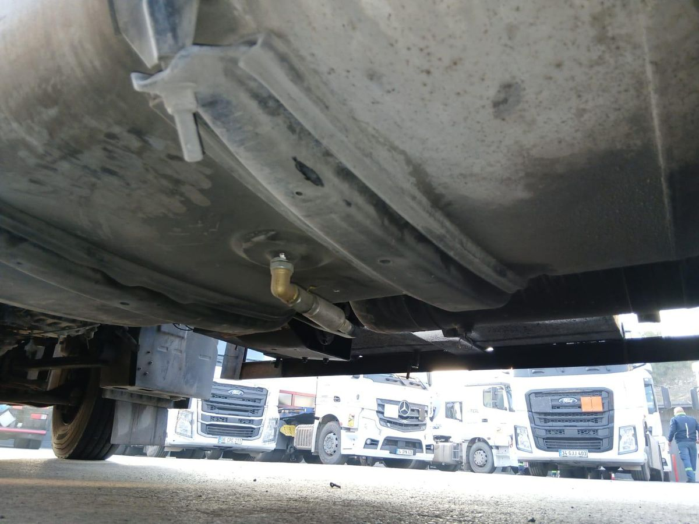
Depo altı sensör montajı Sensor mounted under the tank ±1 Lölçüm hassasiyetimeasurement accuracy -
2023 – 2024Alpplas
Otomatik PCB komponent kontrolü
Automatic PCB component inspection
Konveyör üzerindeki kartlarda, fikstür veya kılavuz olmadan, tüm TH komponentlerin kontrolü: varlık/yokluk, yön, soket pin sayısı, yazı ve sembol doğruluğu. Bu iş için AlpVisionNet derin öğrenme modeli geliştirildi.
Inspection of every through-hole component on boards travelling on the conveyor, with no fixture or guide: presence, orientation, socket pin count, text and symbol correctness. The AlpVisionNet deep-learning model was developed for this.
Şema: hareket halindeki kartta komponent bazlı karar, eksik kapasitör NG Schematic: per-component decisions on a moving board, missing capacitor flagged NG FikstürsüzNo fixturehareket halinde kontrolinspected in motion -
2023Alpplas
Plastik parça baskı ve enjeksiyon kontrolü
Plastic part print and moulding inspection
Lazer baskı sonrası plastik panolarda çapak, kesik, çizik, delik, toz ve leke tespiti; serigrafi kontrolü. OCR ile her fonetik dilde yazı kontrolü, geometrik ölçüm ve renk doğrulama.
Detection of flash, cuts, scratches, holes, dust and stains on laser-printed plastic panels; silkscreen checks. OCR for text in any phonetic language, geometric measurement and colour verification.
Şema: OCR ile yazı doğrulama, çizik ve toz tespiti, geometrik ölçüm Schematic: OCR text verification, scratch and dust detection, geometric measurement 0,1 mmen küçük baskı hatasısmallest print defect -
2023Alpplas
Buton ve LED kalite kontrolü
Button and LED quality inspection
LED'li butonlarda yanma/yanmama, muhafazada ışık sızıntısı, baskı hataları ve sembol doğruluğu. CUDA ile GPU hızlandırma; threading ile aynı anda çok butonda tespit.
Lit/unlit state of LED buttons, light leakage through the housing, print defects and symbol correctness. GPU acceleration with CUDA; multi-threaded detection across many buttons at once.
Şema: tek karede altı buton, biri yanmıyor, birinde ışık sızıntısı Schematic: six buttons in one frame, one unlit, one with light leakage Çoklu butonMulti-buttontek geçiştein a single pass -
2022 – 2023TÜBİTAK
Geri dönüştürülebilir atıkların otonom ayrıştırılması
Autonomous sorting of recyclable waste
TÜBİTAK 2209-B destekli proje. Derin öğrenme ile atık sınıflandırma; kapsamlı veri seti ve CNN optimizasyonu. PLC haberleşmesi, PyQt5 arayüz ve Arduino donanım entegrasyonu.
TÜBİTAK 2209-B funded project. Deep-learning waste classification; an extensive dataset and CNN optimisation. PLC communication, a PyQt5 interface and Arduino hardware integration.
Şema: konveyör üzerinde sınıflandırma ve PLC ile yönlendirme Schematic: classification on the conveyor and PLC-driven sorting 2209-BTÜBİTAK desteğiTÜBİTAK grant
Nasıl çalışıyorum
How a project runs
Dört adım, her adımdan sonra durabilirsiniz.
Four steps, and you can stop after any of them.
-
Keşif
Discovery
Problemi sahada görüyorum: veri, cihazlar, insanlar, kısıtlar. Çoğu yanlış yatırım burada önlenir.
I look at the problem where it lives: data, devices, people, constraints. Most wrong investments get prevented here.
-
Pilot
Pilot
Sabit kapsamlı, kısa bir pilot: neyin çalıştığını, hangi doğrulukla ve hangi donanımla, rakamla görürsünüz.
A short, fixed-scope pilot: what works, at what accuracy, on which hardware, in numbers.
-
Geliştirme ve entegrasyon
Build and integrate
Model, arayüz, cihaz ve mevcut sistemlerle bağlantı. Sistem gerçek yükte çalışana kadar buradayım.
Model, interface, devices and the links to your existing systems. I stay until it runs under real load.
-
Devir teslim
Handover
Dokümantasyon, ekibinize eğitim, yeniden eğitim akışı ve isteğe bağlı bakım.
Documentation, training for your team, a retraining flow and optional maintenance.
Özgeçmiş
Background
Fabrika zemininde büyüyen bir mühendislik.
Engineering that grew up on the factory floor.
Kurucu ortak ve yapay zekâ mühendisiCo-founder and AI engineer · Elanus Robotics Endüstriyel otomasyon, görüntü işleme, IoT ve özel makine: ürünlerin yazılım ve yapay zekâ tarafı · Kasım 2023 –Industrial automation, machine vision, IoT and custom machinery: the software and AI side of the products · November 2023 –
Ar-Ge bilgisayarlı görü ve yapay zekâ mühendisiR&D computer vision and AI engineer · Alpplas Endüstriyel Yatırımlar Özelleştirilebilir, arayüzlü bilgisayarlı görü platformu; endüstriyel kamera API'leri; Lera Developer Framework'e katkı · 2023 – 2025Customisable GUI-based machine-vision platform; industrial camera APIs; contributions to the Lera Developer Framework · 2023 – 2025
StajyerIntern · Alpplas Endüstriyel Yatırımlar Veri seti hazırlama ve model optimizasyonu; Alpasist sinyal dinleme sisteminin Linux'a taşınması · 2022 – 2023Dataset preparation and model optimisation; ported the Alpasist signal-listening system to Linux · 2022 – 2023
Yapay zekâ laboratuvarı proje koordinatörüAI lab project coordinator · Nişantaşı Üniversitesi Proje planlama, ekip yönetimi, makine öğrenmesi eğitim dokümantasyonu · 2021 – 2022Project planning, team management, machine-learning course material · 2021 – 2022
Orchestrating Vision Agents: Real-Time Tracking of Industrial Safety and Operational Performance AgentCon İstanbul, AI Agents World Tour · Nişantaşı Üniversitesi NeoTech Kampüs · 7 Şubat 2026AgentCon Istanbul, AI Agents World Tour · Nişantaşı University NeoTech Campus · 7 February 2026
Extraction of Actual Faults with Adjusting the Pixel Width Parameter to Remove Undesired Noise Pixels in the Image (RPW) International Journal on Engineering, Science and Technology · 2023
Bilgisayar MühendisliğiB.Sc. Computer Engineering · Nişantaşı Üniversitesi 2018 – 2022
Mekatronik Mühendisliği, çift anadalB.Sc. Mechatronics Engineering, double major · Nişantaşı Üniversitesi 2020 – 2023
PythonC++C#PyTorchTensorFlowOpenCVYOLOCUDALLM & agentsQt / PyQtNvidia JetsonCoral TPUPLC / Modbus TCPGSM / IoTLinuxSQLGoogle CloudGit
Hakkımda
About
Sabır, zamanlama ve iyi ışık.
Patience, timing and good light.
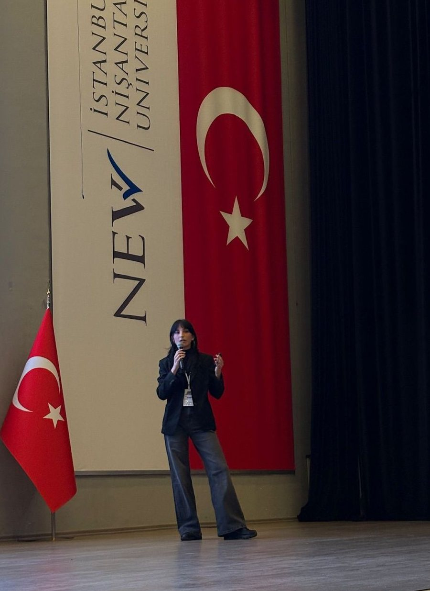
Bilgisayar ve mekatronik mühendisliği okudum; ilk işimden beri üretim hattındayım. Alpplas'ta çalışırken, Kasım 2023'te Elanus Robotics'i kurdum: fabrikalardan tankerlere, atölyelerden servislere, sahada çalışan sistemler.
I studied computer and mechatronics engineering and have worked on production lines since my first job. While at Alpplas, in November 2023, I co-founded Elanus Robotics: systems that run in the field, from factories to tankers, workshops to service centres.
Modelin tek başına bir şey çözmediğini orada öğrendim: kamera, ışık, sensör ve algoritma birlikte tasarlanınca sistem çalışır. Şubat 2026'da AgentCon İstanbul'da, Microsoft ve Google'dan konuşmacılarla aynı sahnede, görü ajanlarıyla iş güvenliği takibini anlattım.
That's where I learned a model solves nothing on its own: the system works when camera, light, sensors and algorithm are designed together. In February 2026 I spoke at AgentCon Istanbul, sharing the stage with speakers from Microsoft and Google, on tracking workplace safety with vision agents.
Lisanslı aikido sporcusuyum; işin çoğu sabır ve zamanlama. Yapay zekânın felsefesini okurum; Turing ve Minsky masamdan eksik olmaz. Öğrendiklerimi blogda yazıyorum.
I'm a licensed aikido practitioner, which is mostly patience and timing. I read the philosophy of AI; Turing and Minsky never leave my desk. I write up what I learn on the blog.
İletişim
Contact
Yapay zekâ, görüntü işleme ya da yazılım tarafında bir işiniz mi var? Yazın, 20 dakikada konuşalım.
Have something in AI, computer vision or software? Write to me and let's talk for 20 minutes.